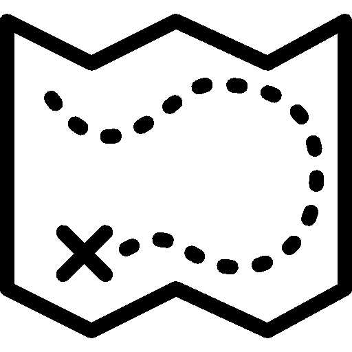

Hello! I'm Eric Johnson. I make cool things on computers. For the last 6 years, I have been
a systems administrator specializing in automation and cloud technologies. I found over the years
that the part of my job I loved the most was writing code that does cool things. So, I decided to
cut out the parts I didn't like about systems administration, and write code full time.
Enough about me. You're here to see my work, so here it is!